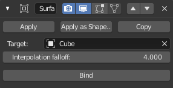

表面变形修改器¶
表面变形修改器允许任意网格曲面控制另一个网格的变形，传递其运动/变形信息。一个非常重要的使用方法就是，用一个代理物体做布料模拟，再将所有动画传递给最终的细节非常丰富的网格物体，细节太丰富的物体不一定适合用布料模拟。
选项¶

表面变形修改器。¶
- 目标
要绑定到的对象。（绑定后此设置不可用）。
- 插值衰减
一个顶点绑定到目标的一个面会受到周围面的影响的多少。这本质上是控制形变的平滑程度。请注意，尽管该值越低，变形越平滑，但也可能会引入轻微的瑕疵。（绑定后此设置不可用）。
- 绑定
将目标网格的当前状态绑定到被修改的网格当前状态上，这样目标网格在其后的任何变动都会影响被修改网格的变动。请注意，直到已执行绑定，修改器才会产生影响。（这并不影响目标物体）。
- 解绑
一旦网格绑定，绑定 按钮变为为 解除绑定 字样。点击执行后会将修改网格从目标网格上释放绑定，并将其重置到它原来的形状。（这并不影响目标物体）。
Note
网格绑定在全局坐标，但随后的物体变换将被忽略。这意味着，修改的对象绑定后，可以自由移动变换目标物体而不会影响所修改的物体。修改的网格只检测目标物体网格本身的变化。
Note
一个网格和目标网格表面差异越大，越有可能产生很多不良瑕疵。这是表面绑定的固有特性，因此建议合理匹配网格，以获得良好的绑定。
Warning
目标网格有效性
虽然有修改网格没有限制，目标物体的网格具有少量的约束，如果不遵守，将会不能成功进行绑定。目标网格必须遵守这些条件：
必须 不 包含有超过两个面的边。
必须 不 包含凹面。
必须 不 包含重叠顶点 （两个以上顶点在一起）。
必须 不 包含面有共线的边。